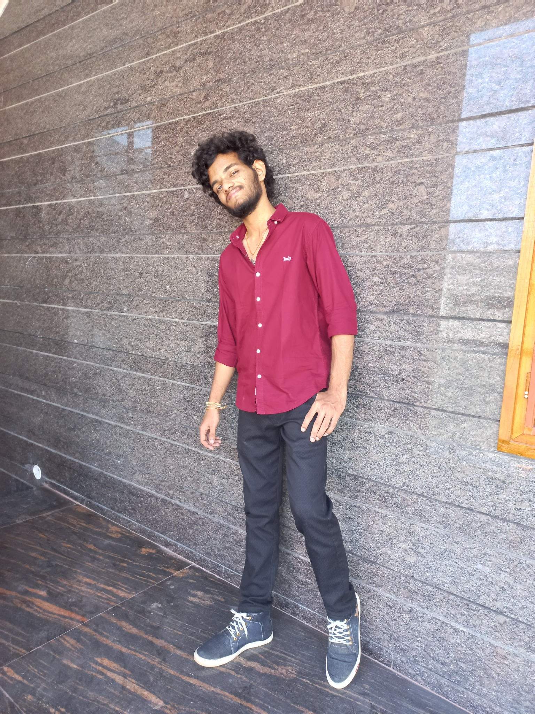

Software Engineer | Fresher | CSE (AI & ML)

About Me
I am Charith, an energetic and motivated Computer Science graduate specializing in Artificial Intelligence and Machine Learning at Annamacharya University, Rajampet. I am passionate about building responsive web applications and software solutions that solve real-world problems. I am a quick learner, a great team player, and always excited to continuously learn and improve my skills.
Education
- B.Tech in Computer Science (AI & ML) - Annamacharya University, Rajampet – Expected Jan 2026
- Intermediate (MPC) - Abhyas Junior College, Proddatur – Jan 2022
- SSC - Sri Chaitanya, Proddatur – Jan 2020
Skills
- Proficient in Python, Java (DSA), C, HTML, CSS, JavaScript
- Strong problem-solving and communication skills
- Web development experience using HTML, CSS, and JavaScript
Projects

- Image to Text Converter – Developed an OCR-based web application using image processing techniques. I used Python's Tesseract OCR library to extract text from images and Flask to connect Python with HTML. GitHub Repo
- Student Management System – A desktop application built with JavaFX that manages student data (insert, update, delete) using a MySQL database. I connected Java and SQL using JDBC and designed the UI using CSS for a modern and clean look. GitHub Repo
Resume
Contact
- Phone: +91-7013723537
- Email: scharith333@gmail.com
- Location: Proddatur, Andhra Pradesh
- GitHub: GitHub Profile
- LinkedIn: LinkedIn Profile